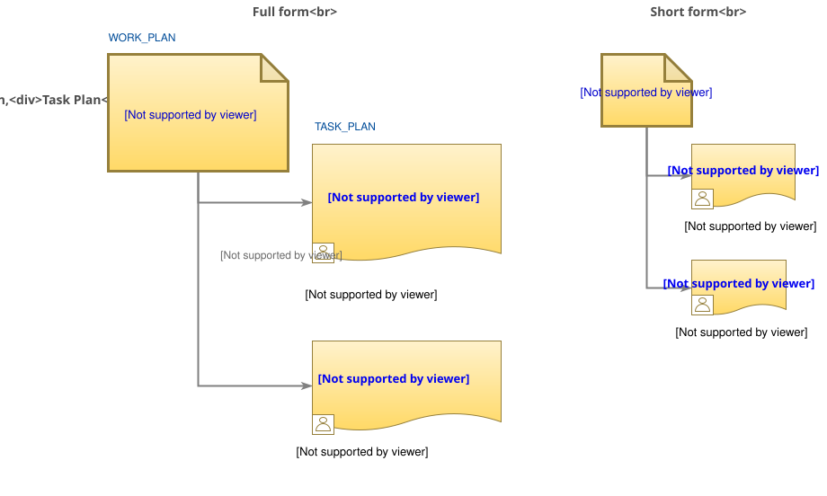
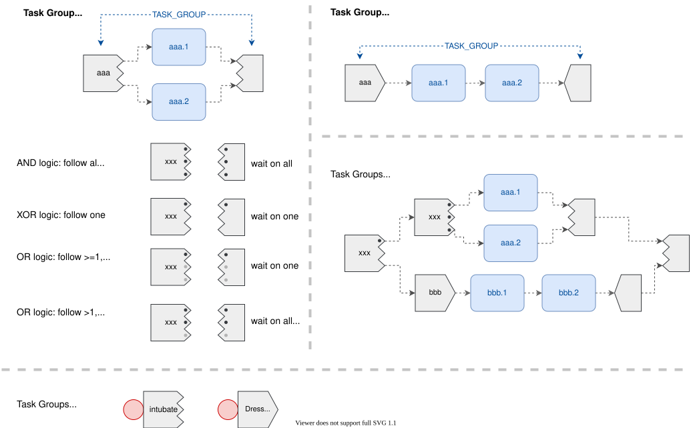
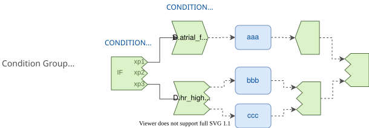
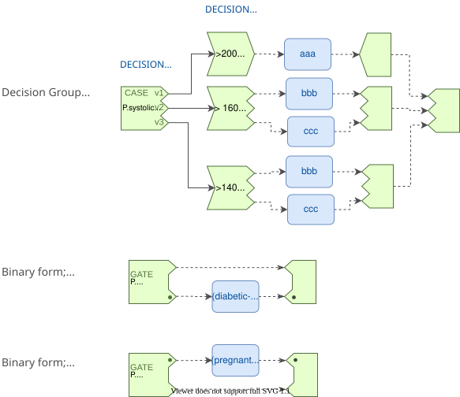
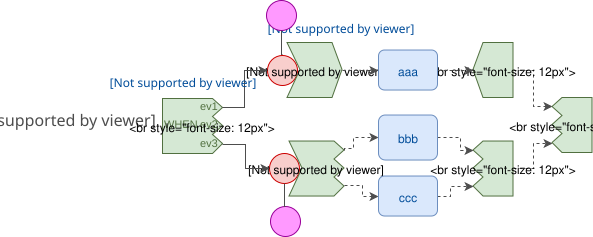
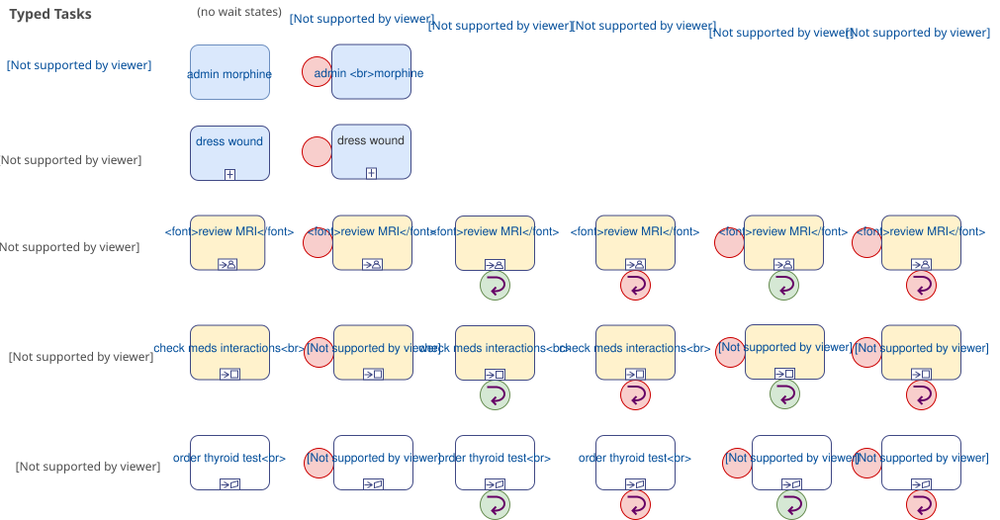
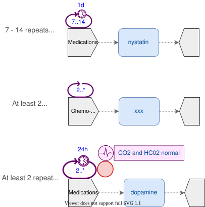
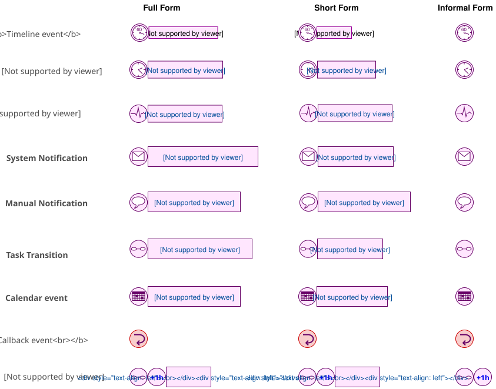

Elements
The elements of TP-VML are based directly on the openEHR Task Planning formal specification, and can be used to construct exectuable Plans.
Composites
The TP-VML elements in this section are composite structures that contain primitive elements.
Plans
TP-VML icons for WORK_PLAN and TASK_PLAN are used (TP plan structure), enabling some of the relevant meta-data to be visualised.

Task Groups
Task Group icons and their conditional structure derivatives use two visual elements to indicate the extent of the (container structure) they represent from the TP model.
Since Tasks and other Task Groups within any Task Group are included by ordered containment (i.e. 'list' semantics) rather than chaining, contained items are shown connected with dashed arrows, indicating the implied ordered.

Conditional Structures
TP conditional structures follow the same structural logic as Task Groups, with the addition of various specific meta-data as per the specificaion.



Primitives
The TP-VML elements in this section are atomic primitives that are used within various levels of containment structure, including Task Groups, the various kinds of conditional structure, Task Plans and Work Plans.
Tasks
TP-VML Tasks correspond to formal types of the form TASK<T> (TP main model; TP Task Action types), whose concrete forms are: PERFORMABLE_TASK<DEFINED_ACTION>, PERFORMABLE_TASK<SUB_PLAN>, DISPATCHABLE_TASK<HAND_OFF>, DISPATCHABLE_TASK<SYSTEM_REQUEST>, DISPATCHABLE_TASK<EXTERNAL_REQUEST>.
Performable Tasks may have one or more associated capture_datasets. Dispatchable Tasks may have an associated callback wait state (CALLBACK_WAIT).

Task Repeats
A Task, or more usually a Task Group may have a repeat specification (TASK_REPEAT) associted with it (TP Repetitions). Various forms are possible. This is diagrammed as follows.

Events
TP-VML Events are defined in the Events section in the TP specification and can be visually represented in three forms:
-
full form: with icon and named attributes from the TP model;
-
short form: with icon and implicit attributes from the TP model;
-
informal: via an icon, with no further specification of details.
Events are specified as triggers for the wait states TASK_WAIT, TIMER_WAIT and CALLBACK_WAIT.
